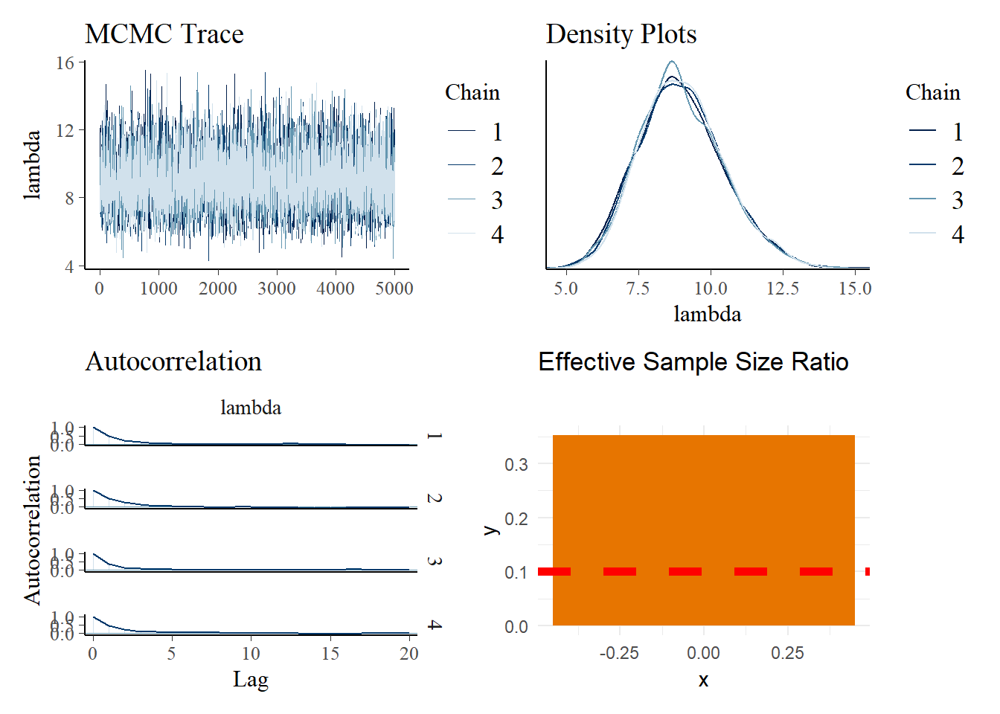
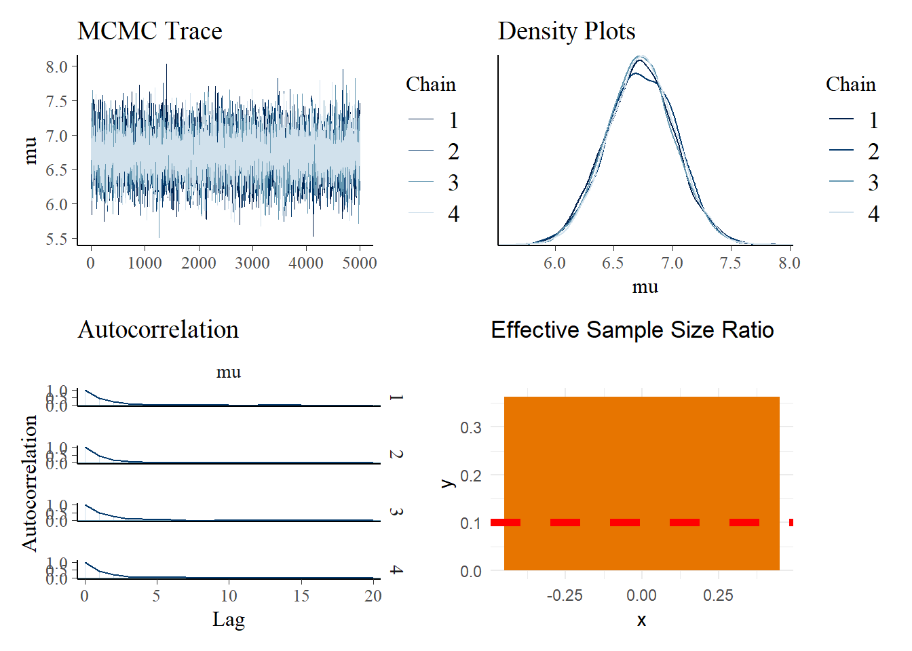

library("bayesrules")
library("bayesplot")
library("DiagrammeR")
library("infer")
library("janitor")
library("patchwork")
library("rstan")
library("tidyverse")
knitr::opts_chunk$set(echo = TRUE)Data
The neon4cast package “provides a collection of convenient helper utilities for anyone entering the EFI NEON Forecasting Challenge.”
raw_df <- readr::read_csv("https://data.ecoforecast.org/neon4cast-targets/aquatics/aquatics-targets.csv.gz")aquatic_df <- raw_df |>
pivot_wider(names_from = "variable", values_from = "observation") |>
filter(!is.na(oxygen)) |>
mutate(hypoxic = oxygen < 3)- For today’s lecture, I am classifying “hypoxic” as dissolved oxygen concentration levels below 3 mg/L (rather than 2 mg/L).
- Northeastern Colorado
- Site type: stream
- Region: Southern Rockies
y2022_data <- aquatic_df |>
filter(site_id == "ARIK") |>
filter(between(datetime,
as_date("2022-01-01"),
as_date("2022-12-31")))y2023_data <- aquatic_df |>
filter(site_id == "ARIK") |>
filter(between(datetime,
as_date("2023-01-01"),
as_date("2023-12-31")))Gamma-Poisson
Scenario 1
How many days per year did we observe hypoxic conditions?
y2022_data |> count(hypoxic)# A tibble: 2 × 2
hypoxic n
<lgl> <int>
1 FALSE 231
2 TRUE 3In the year 2022, there were 3 days with hypoxic conditions.
Gamma Prior
We can tune a vague gamma prior with a mean of 3 days and a variance of 1 day:
\[\text{E}(\lambda) = \displaystyle\frac{s}{r} = 3 \text{ and } \text{Var}(\lambda) = \displaystyle\frac{s}{r^{2}} = 1\]
and obtain
- shape parameter: \(s = 9\)
- rate parameter: \(r = 3\)
Observed Data
y2023_data |> count(hypoxic)# A tibble: 2 × 2
hypoxic n
<lgl> <int>
1 FALSE 260
2 TRUE 27In the year 2022, there were 27 days with hypoxic conditions.
Stan
gp_model <- "
data {
int<lower = 0> Y;
}
parameters {
real<lower = 0> lambda;
}
model {
Y ~ poisson(lambda);
lambda ~ gamma(9, 3);
}
"gp_sim <- stan(model_code = gp_model,
data = list(Y = 27),
chains = 4, iter = 5000*2,
refresh = 0, seed = 320)
p1 <- bayesplot::mcmc_trace(gp_sim, pars = "lambda", size = 0.1) +
labs(title = "MCMC Trace")
p2 <- bayesplot::mcmc_dens_overlay(gp_sim, pars = "lambda") +
labs(title = "Density Plots")
p3 <- bayesplot::mcmc_acf(gp_sim, pars = "lambda") +
labs(title = "Autocorrelation")
n_eff <- bayesplot::neff_ratio(gp_sim, pars = "lambda")
p4 <- data.frame(x = 0, y = n_eff) |>
ggplot(aes(x = x, y = y)) +
geom_bar(fill = "#E77500", stat = "identity") +
geom_hline(yintercept = 0.10, color = "red",
linetype = 2, linewidth = 2) +
labs(title = "Effective Sample Size Ratio") +
theme_minimal()
# patchwork
(p1 + p2) / (p3 + p4)Retrieving Posterior
We can perform later calculations with the simulated posterior distribution if we first recast the information into an R data frame.
gp_df <- as.data.frame(gp_sim, pars = "lambda")
head(gp_df) lambda
1 11.563530
2 11.532309
3 10.145772
4 12.085536
5 8.916516
6 8.598020Sample Statistics
gp_df |>
summarize(post_mean = round(mean(lambda), 4),
post_median = round(median(lambda), 4),
post_sd = round(sd(lambda), 4),
lower_95 = round(quantile(lambda, 0.025), 2),
upper_95 = round(quantile(lambda, 0.975), 2)) post_mean post_median post_sd lower_95 upper_95
1 9.0047 8.9052 1.4928 6.33 12.23Theoretical Statistics
bayesrules::summarize_gamma_poisson(shape = 9, rate = 3,
sum_y = 27, n = 1) |>
mutate_if(is.numeric, round, digits = 4) model shape rate mean mode var sd
1 prior 9 3 3 2.6667 1.00 1.0
2 posterior 36 4 9 8.7500 2.25 1.5# credible interval
qgamma(c(0.025, 0.975), shape = 36, rate = 4)[1] 6.303489 12.169132NHST
Claim: There are 7 days of hypoxic conditions per year at the ARIK NEON site.
We can express this two-sided hypothesis test as
\[H_{o}: \lambda \in (6,8)\] \[H_{a}: \lambda \notin (6,8)\]
Probabilities
prior_prob <- diff(pgamma(c(6,8), shape = 9, rate = 3))
posterior_prob <- gp_df |>
mutate(in_interval = lambda > 6 & lambda < 8) |>
pull(in_interval) |>
mean()Bayes Factor
prior_odds <- prior_prob / (1 - prior_prob)
posterior_odds <- posterior_prob / (1 - posterior_prob)
BF <- posterior_odds / prior_odds
BF[1] 46.61742Since the Bayes factor is greater than one, we have found some evidence that it is more plausible that the number of days per year of hypoxic conditions at the ARIK NEON site is between 6 and 8 days.
Normal-Normal
Scenario 2
How much dissolved oxygen concentration do we find at the ARIK NEON site?
y2022_data |>
summarize(prior_mean = round(mean(oxygen), 4),
prior_median = round(median(oxygen), 4),
prior_sd = round(sd(oxygen), 4),
lower_95 = round(quantile(oxygen, 0.025), 2),
upper_95 = round(quantile(oxygen, 0.975), 2))# A tibble: 1 × 5
prior_mean prior_median prior_sd lower_95 upper_95
<dbl> <dbl> <dbl> <dbl> <dbl>
1 7.73 7.64 2.24 3.47 11.4Observed Data
y2023_data |>
summarize(obs_mean = round(mean(oxygen), 4),
obs_median = round(median(oxygen), 4),
obs_sd = round(sd(oxygen), 4),
lower_95 = round(quantile(oxygen, 0.025), 2),
upper_95 = round(quantile(oxygen, 0.975), 2),
count = n())# A tibble: 1 × 6
obs_mean obs_median obs_sd lower_95 upper_95 count
<dbl> <dbl> <dbl> <dbl> <dbl> <int>
1 6.73 6.71 2.54 2.2 10.2 287Stan
In this example, we are estimating the parameter \(\mu\) and assuming a constant standard deviation from the prior.
nn_model <- "
data {
real Y[287];
}
parameters {
real mu;
}
model {
Y ~ normal(mu, 2.2375^2);
mu ~ normal(7.7274, 2.2375^2);
}
"nn_sim <- stan(model_code = nn_model,
data = list(Y = y2023_data$oxygen),
chains = 4, iter = 5000*2,
refresh = 0, seed = 320)
p1 <- bayesplot::mcmc_trace(nn_sim, pars = "mu", size = 0.1) +
labs(title = "MCMC Trace")
p2 <- bayesplot::mcmc_dens_overlay(nn_sim, pars = "mu") +
labs(title = "Density Plots")
p3 <- bayesplot::mcmc_acf(nn_sim, pars = "mu") +
labs(title = "Autocorrelation")
n_eff <- bayesplot::neff_ratio(nn_sim, pars = "mu")
p4 <- data.frame(x = 0, y = n_eff) |>
ggplot(aes(x = x, y = y)) +
geom_bar(fill = "#E77500", stat = "identity") +
geom_hline(yintercept = 0.10, color = "red",
linetype = 2, linewidth = 2) +
labs(title = "Effective Sample Size Ratio") +
theme_minimal()
# patchwork
(p1 + p2) / (p3 + p4)Retrieving Posterior
We can perform later calculations with the simulated posterior distribution if we first recast the information into an R data frame.
nn_df <- as.data.frame(nn_sim, pars = "mu")
head(nn_df) mu
1 6.746397
2 6.839667
3 6.901907
4 7.078138
5 7.116624
6 6.511242Sample Statistics
nn_df |>
summarize(post_mean = round(mean(mu), 4),
post_median = round(median(mu), 4),
post_sd = round(sd(mu), 4),
lower_95 = round(quantile(mu, 0.025), 2),
upper_95 = round(quantile(mu, 0.975), 2)) post_mean post_median post_sd lower_95 upper_95
1 6.7309 6.7322 0.2935 6.15 7.3NHST
Claim: At the ARIK NEON site, the average dissolved oxygen concentration level is less than 6 mg/L.
We can express this one-sided hypothesis test as
\[H_{o}: \mu < 6.0\] \[H_{a}: \mu \geq 6.0\]
Probabilities
prior_prob <- pnorm(6, mean = 7.7274, sd = 2.2375)
posterior_prob <- nn_df |>
mutate(in_interval = mu < 6) |>
pull(in_interval) |>
mean()Bayes Factor
prior_odds <- prior_prob / (1 - prior_prob)
posterior_odds <- posterior_prob / (1 - posterior_prob)
BF <- posterior_odds / prior_odds
BF[1] 0.02229188Since the Bayes factor is less than one, we have found some evidence that it is less plausible that the average dissolved oxygen concentration level at the ARIK NEON site is less than 6 mg/L.
Future Directions
Objectives
In the second half of the semester, we may revisit this data set to
- use normal regression to predict dissolved oxygen levels
- use Poisson regression to predict chlorophyll-a levels
- use logistic regression and Naive Bayes for classification tasks
- use hierarchical models
Pooling
tri_state_sites_tree <- DiagrammeR::mermaid("
graph TD
oxygen1[oxygen]
oxygen2[oxygen]
oxygen3[oxygen]
oxygen4[oxygen]
oxygen5[oxygen]
oxygen6[oxygen]
temp1[temperature]
temp2[temperature]
temp3[temperature]
temp4[temperature]
temp5[temperature]
temp6[temperature]
walk[WALK]
neco[NECO]
lewi[LEWI]
serc[SERC]
hopb[HOPB]
harv[HARV]
appalachians[Appalachians]
mid_atlantic[Mid-Atlantic]
northeast[Northeast]
response[Response Variable]
oxygen1 --> walk
temp1 --> walk
oxygen2 --> neco
temp2 --> neco
oxygen3 --> lewi
temp3 --> lewi
oxygen4 --> serc
temp4 --> serc
oxygen5 --> hopb
temp5 --> hopb
oxygen6 --> harv
temp6 --> harv
walk --> appalachians
neco --> appalachians
lewi --> mid_atlantic
serc --> mid_atlantic
hopb --> northeast
harv --> northeast
appalachians --> response
mid_atlantic --> response
northeast --> response
")
# print
tri_state_sites_treeFrameworks
Suppose that there is a classroom with 6 students. Two of them happen to have twin siblings.
Frequentist: The probability that at least 2 out of 6 students have twin siblings is very small
Bayesian: Given that 2 out of 6 students have twin siblings, what is the probability of having a twin?
Footnotes
Session Info
sessionInfo()R version 4.3.2 (2023-10-31 ucrt)
Platform: x86_64-w64-mingw32/x64 (64-bit)
Running under: Windows 10 x64 (build 19045)
Matrix products: default
locale:
[1] LC_COLLATE=English_United States.utf8
[2] LC_CTYPE=English_United States.utf8
[3] LC_MONETARY=English_United States.utf8
[4] LC_NUMERIC=C
[5] LC_TIME=English_United States.utf8
time zone: America/New_York
tzcode source: internal
attached base packages:
[1] stats graphics grDevices utils datasets methods base
other attached packages:
[1] infer_1.0.4 DiagrammeR_1.0.10 janitor_2.2.0 lubridate_1.9.3
[5] forcats_1.0.0 stringr_1.5.1 dplyr_1.1.4 purrr_1.0.2
[9] readr_2.1.5 tidyr_1.3.1 tibble_3.2.1 ggplot2_3.4.3
[13] tidyverse_2.0.0 rstan_2.32.5 StanHeaders_2.32.5 patchwork_1.1.2
[17] bayesplot_1.10.0 bayesrules_0.0.2
loaded via a namespace (and not attached):
[1] gridExtra_2.3 inline_0.3.19 rlang_1.1.1 magrittr_2.0.3
[5] snakecase_0.11.0 matrixStats_1.0.0 e1071_1.7-13 compiler_4.3.2
[9] loo_2.6.0 callr_3.7.3 vctrs_0.6.5 reshape2_1.4.4
[13] pkgconfig_2.0.3 crayon_1.5.2 fastmap_1.1.1 ellipsis_0.3.2
[17] utf8_1.2.4 threejs_0.3.3 promises_1.2.1 rmarkdown_2.24
[21] tzdb_0.4.0 markdown_1.8 ps_1.7.5 nloptr_2.0.3
[25] xfun_0.40 jsonlite_1.8.7 later_1.3.1 parallel_4.3.2
[29] prettyunits_1.2.0 R6_2.5.1 dygraphs_1.1.1.6 RColorBrewer_1.1-3
[33] stringi_1.8.3 boot_1.3-28.1 Rcpp_1.0.11 knitr_1.43
[37] zoo_1.8-12 base64enc_0.1-3 httpuv_1.6.11 Matrix_1.6-1.1
[41] splines_4.3.2 igraph_1.4.3 timechange_0.3.0 tidyselect_1.2.0
[45] rstudioapi_0.15.0 yaml_2.3.8 codetools_0.2-19 miniUI_0.1.1.1
[49] curl_5.0.2 processx_3.8.1 pkgbuild_1.4.0 lattice_0.21-9
[53] plyr_1.8.8 withr_3.0.0 shiny_1.7.5 groupdata2_2.0.2
[57] evaluate_0.21 survival_3.5-7 proxy_0.4-27 RcppParallel_5.1.7
[61] xts_0.13.1 pillar_1.9.0 DT_0.28 stats4_4.3.2
[65] shinyjs_2.1.0 generics_0.1.3 hms_1.1.3 rstantools_2.3.1
[69] munsell_0.5.0 scales_1.2.1 minqa_1.2.5 gtools_3.9.4
[73] xtable_1.8-4 class_7.3-22 glue_1.6.2 tools_4.3.2
[77] shinystan_2.6.0 lme4_1.1-33 colourpicker_1.2.0 visNetwork_2.1.2
[81] grid_4.3.2 QuickJSR_1.1.3 crosstalk_1.2.0 colorspace_2.1-0
[85] nlme_3.1-163 cli_3.6.1 fansi_1.0.6 V8_4.3.0
[89] gtable_0.3.4 digest_0.6.33 htmlwidgets_1.6.2 htmltools_0.5.6
[93] lifecycle_1.0.4 mime_0.12 rstanarm_2.21.4 shinythemes_1.2.0
[97] MASS_7.3-60